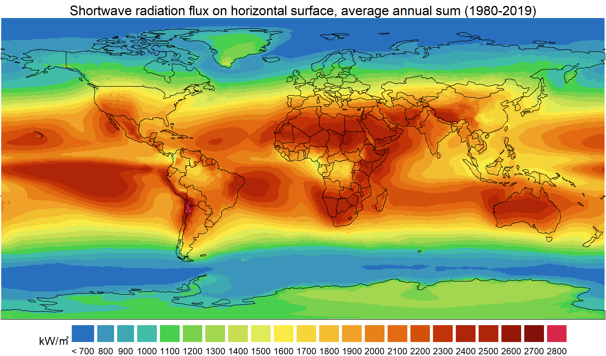
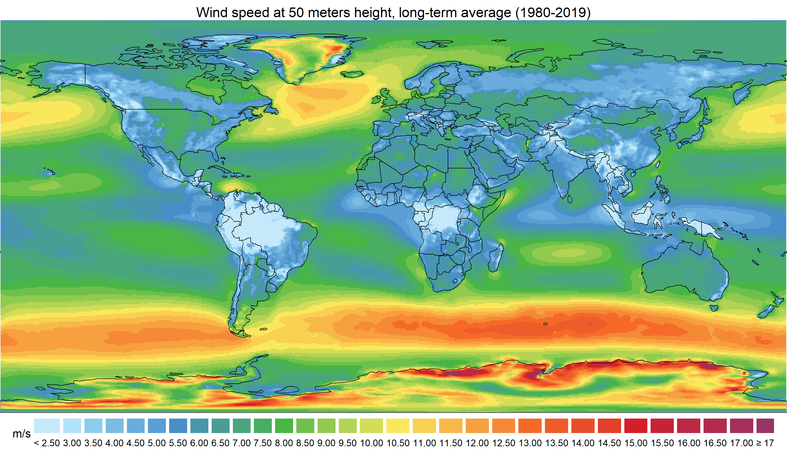

(UNDER CONSTRUCTION)
manuals: https://energyRt.github.io/merra2ools/
dataset: https://doi.org/10.5061/dryad.v41ns1rtt
remotes::install_github("energyRt/merra2ools")
remotes::install_github("energyRt/merra2sample") # optional - example datasetDownload datasets from https://doi.org/10.5061/dryad.v41ns1rtt to a local folder. It is not required to download all the data, but it is suggested to download at least for one full year (12 months).
library(merra2ools)
# link the package with the downloaded data
set_merra2_options(merra2.dir = "PATH TO THE DOWNLOADED DATA")
get_merra2_dir() # check if the path is saved
check_merra2(detailed = T)See https://energyrt.github.io/merra2ools/articles/merra2ools.html or `vignette(“merra2ools”, “merra2ools”) for details.
merra2ools is a dataset and R-package for evaluation of potential output of variable energy sources (VER) wind and solar energy globally, based on 40+ years of hourly MERRA-2 data. The primary purpose of the merra2ools R package is to provide a quick access to the MERRA-2 subset to energy modelers and analysts, sufficient for evaluation VER hourly potential. The database of relevant MERRA-2 indicators has been assembled and published on
that offers data and tools to estimate
long-term subset of
that provides
package offers a set of tools and MERRA-2 data subset to evaluate hourly output potential of solar and wind energy sources, as well as precipitations for weather-dependent hydro power output. The goal of the project is to provide both - the dataset and algorithms to estimate potential output and so-called capacity factors for variable energy sources, used as an input data in energy system modeling and broader application. To keep the size of the database lower than 300Gb for online publication, the original subset of MERRA-2 time series have been minimally processed, rounded, and saved as scaled integers in highly compressed format provided by fst package.
The merra2ools dataset has 41 years (1980-2000) of the hourly time-series:
- UTC - date and time (key) in Coordinated Universal Time (UTC) timezone;
- locid - location IDs (key), an index of locations in MERRA-2 dataset, from 1 to 207936;
- W10M - 10-meter wind speed (calculated sqrt(V10M^2 + U10M^2) where V10M and U10M are northward and eastward wind at 10-meter, m/s, rounded to the first decimal place);
- W50M - 50-meter wind speed (calculated sqrt(V50M^2 + U50M^2) where V50M and U50M are northward and eastward wind at 50-meter, m/s, rounded to the first decimal place);
- WDIR - Direction of wind at 50-meter height (calculated atan2(V50M/U50M), rounded to tens);
- T10M - 10-meter air temperature (Celsius, rounded to the nearest integer);
- SWGDN - Incident shortwave land (W/m^2, rounded to the nearest integer);
- ALBEDO - Surface albedo (index [0,1], rounded to second decimal place);
- PRECTOTCORR - Bias corrected total precipitation (kg/m^2/hour, rounded to the first decimal place);
- RHOA - Air density at surface (kg/m^2, rounded to second decimal place).
Representation of wind with three variables (W10M, W50M, WDIR) is the main difference from the original MERRA-2 data (V10M, U10M, V50M, U50M). This conversion reduces the size of the database and further computational burden of wind power capacity factors.
All variables are hourly averages, UTC-time is given for a middle of every hour.
The merra2ools package includes:
- MERRA-2 grid information and functions to match geo-locations with MERRA-2 grid;
- functions to read and subset data from the compressed files (fst format);
- functions and methods to evaluate solar photovoltaics hourly output/capacity factors;
- functions and methods wind speed extrapolation for higher altitudes (50-200+ meters) and estimate wind power capacity factors;
- functions to fetch data from NREL’s PVWatts model and the dataset by locations (with a goal of validation the POA model and the data);
- functions and methods for “quick” figures and animated gif figures for instant evaluation of the data and the used methodology;
- long term summary statistics of the provided time series for purpose of clustering and aggregation in further modeling and analytics.
The package reproduces basic algorithms of solar geometry, irradiance decomposition, and the Plane-Of-Array models for different types of solar PV trackers. See https://energyrt.github.io/merra2ools/articles/solarpower.html or vignette("solarpower", package = "merra2ools") for details.

See https://energyrt.github.io/merra2ools/articles/windpower.html or vignette("windpower", package = "merra2ools") for details.

See https://energyrt.github.io/merra2ools/articles/merra2.html or vignette("merra2", package = "merra2ools") for all included timeseries.